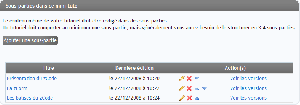
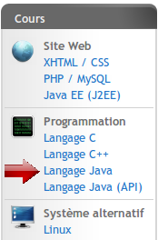

Le Site du Zéro permet à tous les débutants d'acquérir facilement de nouvelles connaissances en lisant les cours gratuits qui y sont proposés.
Vous connaissez peut-être un langage, une bibliothèque, un logiciel que vous aimeriez faire découvrir aux débutants à votre tour ? Le Site du Zéro vous permet d'écrire ces cours et de les publier en ligne !
Si votre cours a du succès, nous le mettrons en avant dans le menu du site. Cela permettra à votre cours de devenir encore plus célèbre ! De plus, si vos lecteurs sont intéressés, nous pouvons publier votre cours en Livre du Zéro et en eBook, qui sera alors diffusé et vendu en librairie, à la FNAC, sur Amazon (Kindle), sur iTunes (iPad), etc. Vous toucherez alors des droits d'auteur pour chaque livre vendu ! ;)
Vous pouvez rédiger un cours sur tout sujet qui vous intéresse dans le domaine des nouvelles technologies, du moment qu'il est écrit correctement et que le contenu est légal.
Néanmoins, si vous manquez d'idées ou si vous souhaitez savoir les sujets que nos visiteurs recherchent le plus, nous vous proposons ci-dessous un tableau régulièrement mis à jour des cours les plus demandés sur le Site du Zéro. Ce sont des cours qui ont de fortes chances de rencontrer beaucoup de succès s'ils sont bien rédigés !
Si vous souhaitez en savoir plus sur le fonctionnement de la rédaction de cours sur le Site du Zéro, et sur l'édition de votre cours en Livre du Zéro, lisez la section qui suit. :)
Les 3 principales étapes de la rédaction d'un cours sont celles du schéma présenté en introduction :
Les deux premières étapes sont accessibles à tous les membres du site, tandis que la dernière (publication en livre et eBook) concerne les cours qui ont le plus de succès. Voyons ensemble comment cela fonctionne ! :)
Etape 1 : rédaction du cours
Cette première étape est ouverte à tous. Vous devez simplement créer un compte sur le Site du Zéro pour avoir accès à l'interface de rédaction de cours « Vos tutos ».
Prenez bien le temps de soigner la rédaction de votre cours. Choisissez un sujet que vous connaissez et que vous aimeriez partager : un langage de programmation, un logiciel, une technologie... La seule condition est de rédiger un cours qui soit le plus accessible possible aux débutants.
Nous vous conseillons d'écrire un plan de cours détaillé et soigné dès le départ. Choisissez judicieusement le nombre, le nom et l'ordre des chapitres. Notez que vous pouvez rédiger des tutoriels d'une seule page (mini-tutoriels) et des tutoriels de plusieurs pages (big-tutoriels). Seuls ces derniers sont suffisamment conséquents pour pouvoir être adaptés en Livre du Zéro par la suite.
Une fois que c'est fait, vous pouvez passer à la rédaction !
Etape 2 : publication sur le Site du Zéro
Vous devez avoir rédigé au moins 3 chapitres (dans le cas d'un big-tutoriel) avant de pouvoir publier votre cours sur le Site du Zéro. Nous vous conseillons par ailleurs de publier le plus tôt possible votre cours (c'est-à-dire dès les 3 premiers chapitres écrits) afin d'avoir des retours de vos premiers lecteurs qui ne manqueront pas de vous encourager à continuer, ce qui est toujours très motivant. :)
Etape 2a : mise en ligne du cours
Notre équipe de validateurs va auparavant s'assurer que votre cours est conforme à nos normes de qualité : orthographe, rédaction, exactitude des propos... Cette étape de validation peut prendre de quelques jours à quelques semaines selon la taille de votre cours.
Lorsque votre tutoriel est validé, il est visible en ligne sur le Site du Zéro par tout le monde ! Les visiteurs peuvent y accéder depuis l'onglet « Cours » en allant dans la catégorie appropriée, ou bien via une recherche sur le site.
Etape 2b : mise en avant dans le menu
Si votre cours est bien écrit et a du succès, nous pouvons le mettre en avant.
Comment cela fonctionne-t-il ? Nous contactons généralement les auteurs des cours qui rencontrent le plus de succès nous-mêmes, mais vous pouvez si vous le souhaitez nous contacter à tout moment pour nous présenter votre projet de cours. Nous demandons au minimum un plan détaillé du cours que vous envisagez d'écrire afin que nous puissions en discuter et vous guider.
Nous pouvons vous mettre en avant dans le menu « Cours » à gauche du site, si les conditions suivantes sont remplies :
Votre cours doit intéresser un minimum de visiteurs.
Vous devez en avoir rédigé au moins la première partie (6-10 chapitres).
Votre cours doit avoir été validé par notre équipe.
La mise en avant dans le menu augmentera considérablement le nombre de visites de votre tutoriel et vous permettra d'effectuer des mises à jour plus régulières tout en recevant de plus nombreux commentaires pour l'améliorer.
Etape 3 : publication en Livre du Zéro (papier et eBook)
Si votre cours est terminé, qu'il a toujours autant de succès et que les visiteurs du Site du Zéro le demandent, nous prenons à nouveau contact avec vous pour l'éditer dans la collection Livre du Zéro.
Vous travaillez avec notre aide pour adapter votre cours en livre et en eBook (pour Amazon Kindle et iPad/iPhone).
Une fois terminé, votre livre sera ensuite vendu en ligne et en librairie sous votre nom d'auteur. Nous nous occupons de sa diffusion (communication sur le site, auprès des magazines...) et de sa distribution (envoi aux librairies, aux clients qui ont commandé en ligne...). Et bien entendu, vous serez rémunéré pour chaque livre vendu grâce aux droits d'auteur !
Le Site du Zéro permet à tous ses membres de rédiger des cours. Pour cela, il suffit de créer un compte si ce n'est déjà fait : c'est simple et rapide.
L'outil de rédaction de cours du Site du Zéro
Vous aurez ensuite accès à votre interface de création de tutoriels en allant dans le menu « Mon compte / Tutoriels ». Vous pourrez rédiger des cours sur les sujets que vous connaissez et que vous souhaitez partager.
Nous avons rédigé un mode d'emploi du système de création de tutoriels. Vous y trouverez par ailleurs une foule de conseils pour bien rédiger votre cours sur le Site du Zéro :
Pendant que vous rédigez votre cours, celui-ci est hors ligne. Vous êtes le seul à pouvoir le lire à ce moment-là. Lorsque votre cours est suffisamment avancé pour être présenté au public, vous pouvez demander sa publication. Il passe alors en validation.
Notre équipe de validateurs lira alors votre tutoriel et vérifiera s'il est conforme à la qualité des cours que nous attendons sur le Site du Zéro : orthographe, expression, contenu... La validation de votre tutoriel peut prendre de quelques jours à quelques semaines, selon la taille de celui-ci.
Je vous invite à lire la page « Conseils des validateurs » dans laquelle ils décrivent comment bien rédiger et ainsi augmenter ses chances de voir son tutoriel validé :
Si votre cours est validé, il apparaît alors en ligne. Tous les visiteurs du site peuvent le lire. Pour y accéder, ils doivent aller dans la section « Cours » en cliquant sur l'onglet en haut du site, puis en sélectionnant la catégorie dans laquelle se trouve votre cours. Ils peuvent aussi tomber sur votre cours en effectuant une recherche sur le Site du Zéro ou sur un moteur de recherche externe (comme Google), cela arrive fréquemment.
Votre cours plaît ?
Si votre cours plaît et que des visiteurs le consultent régulièrement, nous vous contacterons pour organiser sa mise en avant sur le site. Cela signifie qu'un lien vers votre cours apparaîtra dans le menu à gauche du site, ce qui augmentera de manière importante son trafic.

Votre cours est mis en avant !
Tous nos cours sont sous licence libre Creative Commons qui autorise la libre diffusion du contenu. Cela fait partie de notre philosophie car nous souhaitons que nos cours soient accessibles à tous sans contraintes Nous ne considérons pas la copie comme une atteinte au droit d'auteur à l'ère du numérique. Nous préférons au contraire voir cela comme un atout qui permet d'augmenter les chances qu'un contenu de qualité soit lu par un maximum de personnes.
Votre cours a du succès ?
Une fois votre cours présenté dans le menu, vous devriez voir son trafic augmenter de façon substantielle. Vous devriez avoir de plus en plus de remarques, commentaires et retours de vos lecteurs, ce qui vous permettra de l'améliorer plus rapidement. Vous aurez aussi un peu plus d'encouragements car les visiteurs viendront régulièrement vérifier s'il n'y a pas de nouveautés !
Si le succès est au rendez-vous et que vos lecteurs le réclament, nous pouvons transformer votre tutoriel en un Livre du Zéro (papier et eBook), livre qui sera vendu sur le Site du Zéro mais aussi en librairie (FNAC, Amazon, Cultura, etc.) et sur iTunes. Vous toucherez alors un pourcentage de droit d'auteur sur chaque livre et eBook vendu, en plus d'avoir la gloire et la postérité éternelle d'avoir rédigé un livre. ;)
Vous travaillerez avec notre aide à l'adaptation de votre tutoriel en livre, notamment pour travailler la mise en page, l'index, le texte de la couverture, etc. Une fois votre livre terminé, nous nous occupons de son impression, de sa diffusion, de sa commercialisation, du suivi des ventes (notamment du service après-vente), ainsi que de sa mise en avant sur le site et en librairie.
Le livre paraît alors en librairie et sur les magasins Amazon et iTunes pour les eBooks. Vous êtes alors référencé en tant qu'auteur et commencez à toucher des droits d'auteurs, c'est la récompense de tous vos efforts pour avoir rédigé un cours pour débutants de qualité ! :)
Puis-je rédiger un cours sur un autre sujet que ceux présentés dans le tableau des cours les plus attendus ?
Bien sûr ! Ce tableau n'est là que pour vous guider et vous donner une idée des sujets les plus demandés, mais cela ne veut absolument pas dire que ce sont les seuls cours qui auraient un intérêt sur le Site du Zéro ! N'hésitez donc pas à rédiger sur un autre sujet. ;)
Mon cours doit-il avoir un rapport avec l'informatique obligatoirement ?
Actuellement oui car nous nous concentrons sur les tutoriels informatiques. Néanmoins, une version du Site du Zéro est désormais dédiée aux tutoriels scientifiques : http://sciences.siteduzero.com.
Comment savoir si un autre auteur ne travaille pas déjà sur le même sujet que moi ?
Nous mettons à jour régulièrement le tableau sur cette page pour tenir compte des tutoriels en cours de rédaction sur les sujets les plus demandés. Vous pouvez aussi faire une recherche d'un tutoriel précis sur le site pour voir si un cours sur le même sujet existe déjà, s'il est à jour, etc.
Pouvons-nous écrire un tutoriel (et un livre) à plusieurs ?
Rien ne l'interdit. Néanmoins, vous devrez être parfaitement organisés, bien vous répartir les tâches et faire le point régulièrement ensemble afin de vérifier que le projet avance. De manière générale, nous vous recommandons de travailler à deux au maximum, voire trois si vous êtes parfaitement organisés. Au-delà, c'est bien souvent difficile à gérer.
Concernant la rémunération, celle-ci est fixe quel que soit le nombre d'auteurs. Vous devrez donc vous mettre d'accord entre vous pour fixer la répartition des droits d'auteur.
Suis-je payé pour la rédaction de cours en ligne ?
Vous êtes payé lorsque votre tutoriel est publié en livre (que ce soit papier et eBook). Vous touchez alors un pourcentage de chaque vente correspondant aux droits d'auteur. La version web ne donne pas lieu à des droits d'auteurs, mais elle permet en revanche de vous faire connaître sur la toile !
Si j'écris un cours sur le site, me demandez-vous mon accord avant de le publier en Livre du Zéro ?
Bien sûr ! Nous ne faisons strictement rien sans votre accord. Publier un cours sur le Site du Zéro ne vous engage pas à être publié en livre. Si vous ne souhaitez pas que votre cours soit adapté, vous n'y serez jamais obligé.
Je suis mineur, suis-je concerné par tout cela ?
Vous pouvez tout à fait rédiger et même publier un livre en étant mineur. Il faudra cependant l'accord de votre représentant légal (l'un de vos parents) en cas de signature de contrat.
{kind=link}